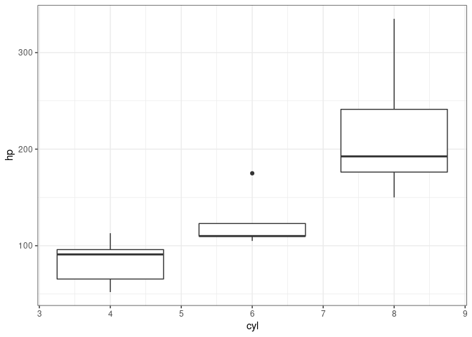
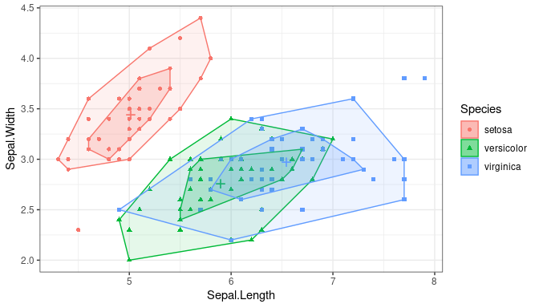
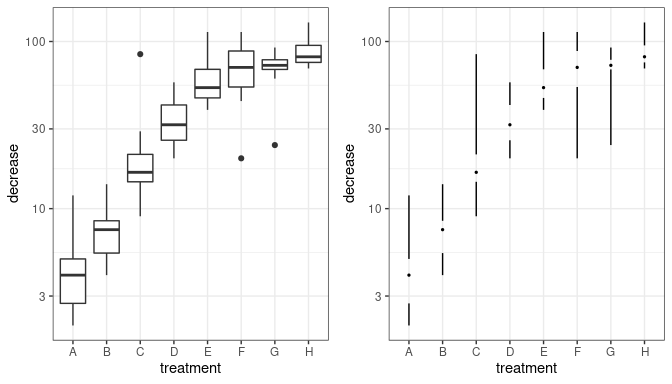

Packages
library(ggplot2); theme_set(theme_bw())
library(rainbow) ## bagplots etc.
library(ggthemes)
library(directlabels)
theme_update(panel.spacing=grid::unit(0,"lines"))
library(cowplot) ## for arranging multiple plots, labeling, etc.
library(Hmisc)
John Tukey: exploratory data analysis

Tukey: principles
- simplicity
- speed
- flexibility
- robustness
- parsimony
stem-and-leaf plot
Distribution of horsepower:
stem(mtcars$hp)
##
## The decimal point is 2 digit(s) to the right of the |
##
## 0 | 5677799
## 1 | 0011111122
## 1 | 55888888
## 2 | 123
## 2 | 556
## 3 | 4
boxplot
ggplot(mtcars,aes(cyl,hp,group=cyl))+geom_boxplot()

bag plot (2D boxplot)
(Rousseeuw et al. 1999) In ggplot (note hidden code):
ggplot(iris, aes(Sepal.Length,Sepal.Width,colour=Species,shape=Species,fill=Species))+
geom_point()+ geom_bag()

The rainbow package implements functional boxplots, for high-dimensional (functional) data analysis: it uses various forms of projection or dimension reduction, followed by a bagplot of the first two projected dimensions
rainbow::fboxplot(data = ElNino_ERSST_region_1and2,
plot.type = "bivariate",
type = "bag", projmethod="PCAproj")
is Tukey still relevant?
- yes (principles)
- data size/complexity and computing power are both increasing
Cleveland: quantifying viz efficacy

principles
- accuracy of quantitative representation
- visual estimation of differences
perceptual experiments
- show participants the same data in different formats
- ask them questions about relative magnitudes
perceptual experiments: results
is Cleveland still relevant?
- yes!
- Elliott (2016), "39 studies about human perception in 30 minutes"
- healthy tradition of scientific experiments on graphical perception
- accuracy
- memory
- preference
Heer et al. (2010)
Edward Tufte

Tufte principles
- functional, minimal graphics
- maximize data-ink / minimize non-data-ink
- don't lie (lie factor)
- small multiples
- "If a picture isn't worth 1000 words, the hell with it" - Ad Reinhardt
- information at the point of need (legends etc.)
- Powerpoint sucks
"Understand that Tufte’s ideas are a good starting point, not a religion" Robert Kosara
data ink
- maximize data ink (within reason)
g0 <- ggplot(OrchardSprays,aes(treatment,decrease))+scale_y_log10()
print(plot_grid(g0 + geom_boxplot(), g0 + geom_tufteboxplot()))

ggthemes::geom_tufteboxplot()
- less eye movement is better
- direct labels > legends > info in caption > info in text
g1 <- ggplot(iris,aes(Sepal.Length,Petal.Length,colour=Species,
shape=Species))+geom_point()
print(plot_grid(g1,direct.label(g1)))
direct labeling
- manually if necessary
directlabels package
- works with
lattice and ggplot graphics
- variety of labeling choices, e.g.
last.bumpup: "Label last points, bumping labels up if they collide"
- documentation
- related:
ggrepel (auto-repelling text labels)
other
Rules of thumb
- (Continuous) response on the y-axis
- assumes we have a single, quantitative/ordered (continuous or discrete) response variable; multivariate responses more challenging
- put most salient predictor on the x-axis
- highest value in Cleveland hierarchy
- if most important predictor is categorical, use most important continous predictor on x-axis
- if most important predictor has few categories, use next most important predictor with many categories
Rules of thumb (continued)
- Put most salient comparisons within the same subplot (distinguished by color/shape), and nearby within the subplot when grouping bars/points
- Facet rows > facet columns
Rules of thumb (3)
- Use transparency to include important but potentially distracting detail
- Do category levels need to be identified or just distinguished? (Direct labeling, e.g. via
directlabels package)
- Order categorical variables meaningfully ("Alabama/Alberta" problem)
- Think about whether to display population variation (standard deviations, boxplots) or estimation uncertainty (standard errors, mean ± 2 SE, boxplot notches)
- Try to match graphics to statistical analysis, but not at all costs
- Choose colors carefully (
RColorBrewer/ColorBrewer, IWantHue: respect dichromats and B&W printouts (see dichromat & colorblindr & cividis packages (Sciani
Data presentation scales with data size
- small show all points, possibly dodged/jittered, with some summary statistics: dotplot, beeswarm. Simple trends (linear/GLM/loess)
- medium boxplots, loess, histograms, GAM (or linear regression)
- large modern nonparametrics: violin plots, hexbin plots, kernel densities: computational burden, and display overlapping problems, relevant
- combinations or overlays where appropriate (beanplot; rugs+scatterplot)
examples
Some examples (from a screed on "dynamite plots"):
Notes
- the dreaded "dynamite plot". Problems:
- bar plot on logarithmic axis is inappropriate (anchors graph to arbitrary zero point)
- assumes distribution is symmetric (although this applies to b,c as well)
- some forms of this plot show only top whisker (makes comparison even harder)
- inferential (point ± 2 SE) plot
- same assumptions as dynamite plot
- less strongly anchored to zero
Notes (continued)
- points ± 1 and 2 SE
- de-emphasizes approximate 95% CI
- equivalent for Bayesian posterior intervals would typically show both 50% and 95% credible intervals (based on quantiles or highest posterior density)
- points alone
- true to the data
- description only; provides no inferential help
- can confound sample size and range (larger samples have more extreme values so look more variable)
Notes (continued)
- boxplots
- well-established
- "outliers" can be misleading (Dawson 2011)
- can add notches to indicate approximate 95% CI on medians (McGill et al. 1978)
- violin plots
- mirror-image density plots
- best for large data sets
- may be funky for small/medium data sets
- can be combined with jittered data, segments indicating median/quantiles, etc.
Example
References
Dawson, R. 2011. Journal of Statistics Education 19 (2): 1–12.
Elliott, K. 2016. Medium. https://medium.com/@kennelliott/39-studies-about-human-perception-in-30-minutes-4728f9e31a73.
Heer, J et al. 2010. In Proceedings of the SIGCHI Conference on Human Factors in Computing Systems, 203–212. ACM.
McGill, R et al. 1978. The American Statistician 32 (1): 12–16. doi:10.2307/2683468. http://www.jstor.org/stable/2683468.
Rousseeuw, PJ et al. 1999. The American Statistician 53 (4) (November): 382–387. doi:10.1080/00031305.1999.10474494.
Sciani, M. 2018. https://github.com/marcosci/cividis.